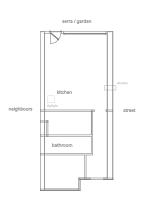
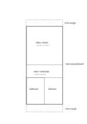
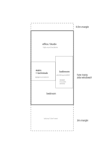
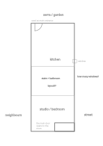

Dear architect,
I want to renovate my home and I'm potentially interested in hiring you to help me design the renovation, drawing the plans, interfacing with the municipality to check what's possible to build and choosing a contractor.
My neighbourhood was build in the 1970s and it consists of a mixture of one, two and three storey flat-roofed houses; with a significant number of one and two storey houses having a rooftop extension. My house is at the corner of a row of single-storey terraced houses.

I want to build a rooftop extension and remodel the current ground floor.
A lot of the renovations I've visited feel like the same model house on different addresses; I would like to make bolder design decisions to match more closely how I (will) use the spaces and my style preferences.
I'm not sure I want to make non-sensible financial decisions for them.
There are two big unknowns about what the municipality will permit: how large can the rooftop extension be, and how many side windows are possible to include in the top floor—or open in the ground floor.
A very experienced contractor that has built over a dozen rooftop extensions in my neighbourhood insists that the municipality will ask for 0.5m clearance between the current facade and the extension facade on my house. However, my next-door neighbours told me that the municipality told their architect that they needed ~3m clearance on the front facade, and that's the specification they used to build their extension. I'd like the extension to be as big as possible, but I think the most likely reality is that we would need to design the extension with the smallest footprint.
In the ideal case that the extension floor plan only needs 0.5m facade clearance, Figure 2 is how I'm imagining the extension layout, with an open mind about how to do the central stairs area.

If the extension needs 3m clearance on the front facade, Figure 3 is where I'm at in terms of layout design.

My rationale for placing the bathroom in that side of the house is for the possibility of having a side window opening to the street. I'm not sure how realistic is to have the bathroom in that location giving that the plumbing of the current bathroom is on the other side of the house. If the municipality won't allow including a bathroom window, or the plumbing is too inconvenient, I guess the bathroom would have to be in the opposite side and include a skylight.
I think the design of the ground floor will fall into place once there's clarity about what's possible with the extension; but I'm planning on taking down all existing walls, redoing the electrical system, and taking out the current gas and heating pipes.
The "back" garden entrance is used as the main entrance to the home, so I want to "front" entrance to open directly to the ground floor studio / bedroom to maximize space.
The current size of the kitchen and living area feels perfect, so I'm not interested in making that room bigger, unless the stairs are included in it.
Right now the kitchen has great natural light and ventilation because of the skylight above it, which will be gone after building the extension. That's why I'm thinking about moving the kitchen to the street-side to place it next to the window, which would mean having the hallway door in the neighbours-side.
I want to maintain a fully functional ground floor bathroom with a shower, sink and toilet; but with smaller dimensions than the currently existing one.
